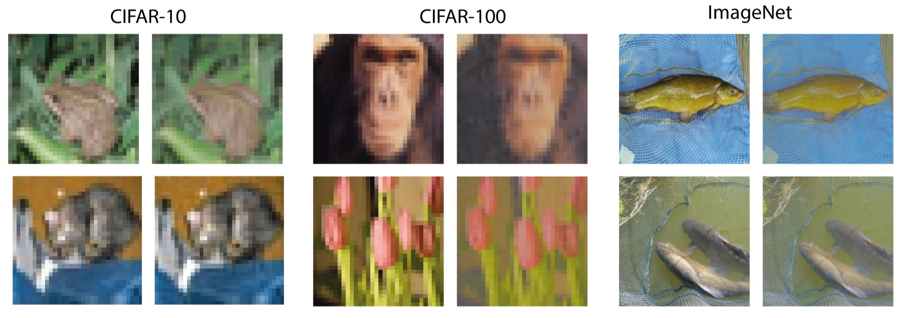

Motivation
Benchmarks such as ImageNet-C test robustness with a fixed menu of hand-picked corruptions — blur, noise, weather, compression. They tell you that a model breaks, but not why. Two models with identical ImageNet-C scores can fail for completely different reasons.
Frequency is a more honest coordinate system. Natural images concentrate their energy in low frequencies; most corruptions are really reweightings of the spectrum. If you can find the frequency band a model depends on, you have found its failure mode — and you have found it in a form that transfers across architectures.
Method
MUFIA (Multiplicative Frequency Attack) decomposes an image with a DCT, then searches for a multiplicative mask over frequency coefficients that flips the model's prediction while keeping the image perceptually close to the original. Because the perturbation is multiplicative rather than additive, it behaves like a plausible corruption — an attenuation of detail — rather than like noise pasted on top of the picture.

The MUFIA pipeline: decompose, learn a multiplicative frequency mask, reconstruct.
- Decompose. Transform the image into DCT frequency bands.
- Search. Optimise a per-band multiplicative mask against the model's loss, constrained to stay within a perceptual similarity budget.
- Reconstruct. Invert the transform. The result reads as a mildly degraded photograph, not an attacked one.
What we found
- The blind spots are shared. Masks found against one architecture transfer to others, including models trained with completely different recipes. The vulnerability lives in the data statistics, not in any one network.
- Corruption-robust training does not close them. Models hardened on ImageNet-C style augmentations remain vulnerable to MUFIA — they learned those specific corruptions, not the underlying spectral sensitivity.
- Perceptual similarity stays high. The attacked images remain close to the originals under perceptual metrics, so the failures are not explained away as out-of-distribution inputs.
Takeaways
Robustness benchmarks built from a fixed corruption list overstate how robust models really are. A frequency-domain view gives a sharper, architecture-agnostic picture of where a model is fragile — and a cheap way to generate new corruptions that a benchmark has never seen.
This line of work fed directly into EREN, which attacks the same problem from the other end: fixing the input before it reaches the classifier.